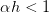
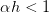
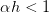
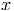
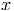

e, logo após, na segunda linha de comando,
a variável y recebe o valor double . Observamos que o símbolo = significa o
operador de atribuição não o de igualdade. O operador lógico de igualdade no
Scilab é ==.
e, logo após, na segunda linha de comando,
a variável y recebe o valor double . Observamos que o símbolo = significa o
operador de atribuição não o de igualdade. O operador lógico de igualdade no
Scilab é ==.
Scilab é uma linguagem interpretada em que todas as variáveis são matrizes. Uma variável é criada quando um valor é atribuído a ela. Por exemplo:
a variável x recebe o valor double e, logo após, na segunda linha de comando,
a variável y recebe o valor double . Observamos que o símbolo = significa o
operador de atribuição não o de igualdade. O operador lógico de igualdade no
Scilab é ==.
Comentários e continuação de linha de comando são usados como no seguinte exemplo:
No Scilab, os operadores matemáticos elementares são os seguintes:
Várias funções e constantes elementares já estão pré-definidas no Scilab. Por exemplo:
Para mais informações sobre quais as funções e constantes pré-definidas no Scilab, consulte o manual, seções “Funções elementares” e o carácter especial “%".
No Scilab, o valor lógico verdadeiro é escrito como %T e o valor lógico falso como %F. Temos os seguintes operadores lógicos disponíveis:
Solução. No Scilab, temos:

 , então  é maior ou igual a 1 e menor que 3?
, então  é maior ou igual a 1 e menor que 3?